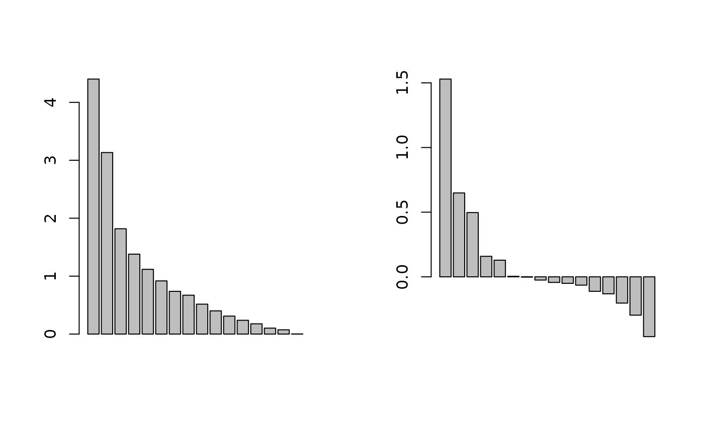

Tinto and Odiel estuary geochemistry
tintoodiel.RdThis data set contains informations about geochemical characteristics of heavy metal pollution in surface sediments of the Tinto and Odiel river estuary (south-western Spain).
Usage
data(tintoodiel)Format
tintoodiel is a list with the following components:
- xy
a data frame that contains spatial coordinates of the 52 sites
- tab
a data frame with 12 columns (concentration of heavy metals) and 52 rows (sites)
- nb
the neighbourhood graph of the 52 sites (an object of class
nb)
Source
Borrego, J., Morales, J.A., de la Torre, M.L. and Grande, J.A. (2002) Geochemical characteristics of heavy metal pollution in surface sediments of the Tinto and Odiel river estuary (south-western Spain). Environmental Geology, 41, 785–796.
Examples
data(tintoodiel)
estuary.pca <- dudi.pca(tintoodiel$tab, scan = FALSE, nf = 4)
if(requireNamespace("spdep", quietly = TRUE) & requireNamespace("adespatial", quietly = TRUE)) {
estuary.listw <- spdep::nb2listw(tintoodiel$nb)
estuary.pca.ms <- adespatial::multispati(estuary.pca, estuary.listw, scan = FALSE,
nfposi = 3, nfnega = 2)
summary(estuary.pca.ms)
par(mfrow = c(1, 2))
barplot(estuary.pca$eig)
barplot(estuary.pca.ms$eig)
par(mfrow = c(1, 1))
}
#>
#> Multivariate Spatial Analysis
#> Call: adespatial::multispati(dudi = estuary.pca, listw = estuary.listw,
#> scannf = FALSE, nfposi = 3, nfnega = 2)
#>
#> Scores from the initial duality diagram:
#> var cum ratio moran
#> RS1 4.401792 4.401792 0.2751120 0.222781944
#> RS2 3.133961 7.535753 0.4709846 0.217365304
#> RS3 1.818129 9.353883 0.5846177 0.004424936
#> RS4 1.379856 10.733739 0.6708587 -0.209208617
#>
#> Multispati eigenvalues decomposition:
#> eig var moran
#> CS1 1.5292058 3.707268 0.4124886
#> CS2 0.6486201 2.415632 0.2685095
#> CS3 0.4969485 1.126228 0.4412505
#> CS15 -0.2964507 1.648786 -0.1797994
#> CS16 -0.4623624 1.365391 -0.3386300
